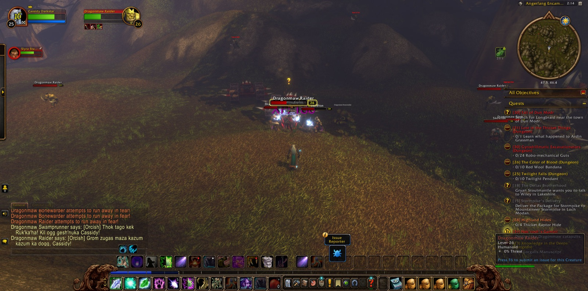
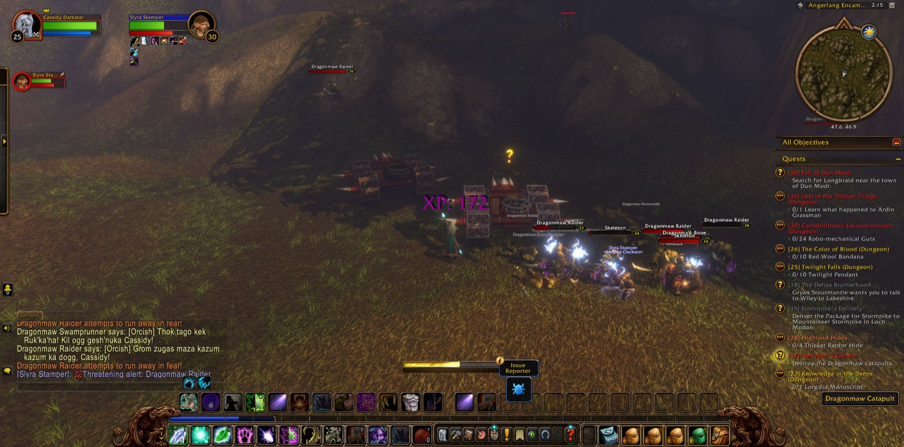
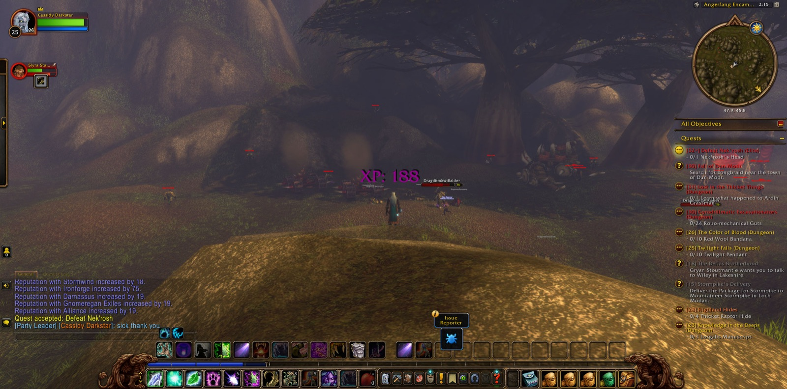
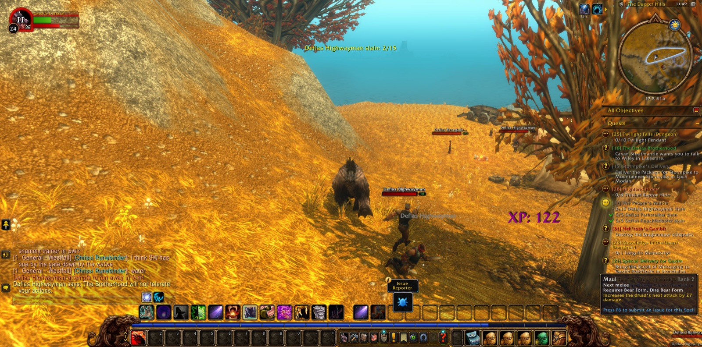
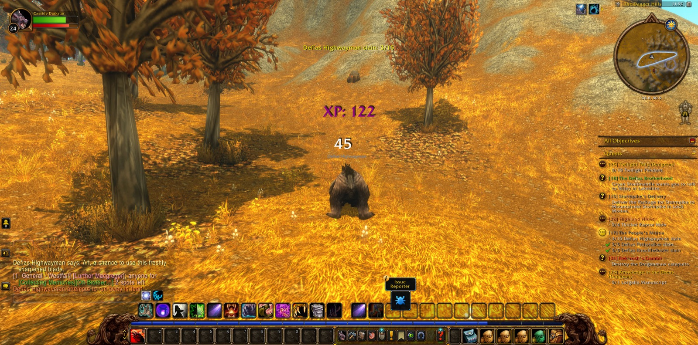
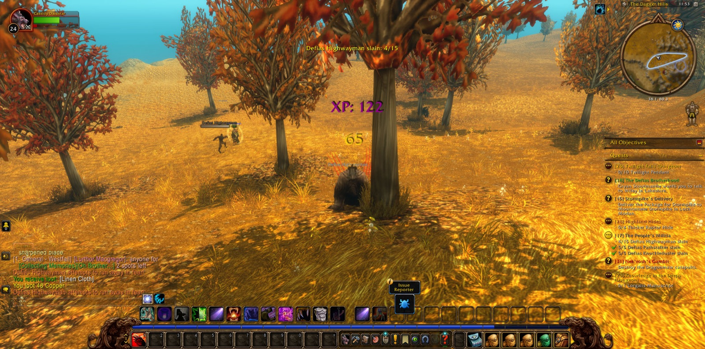
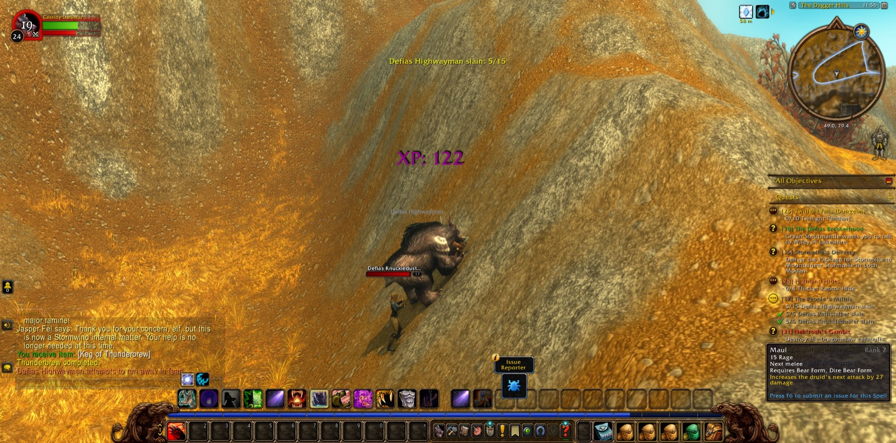
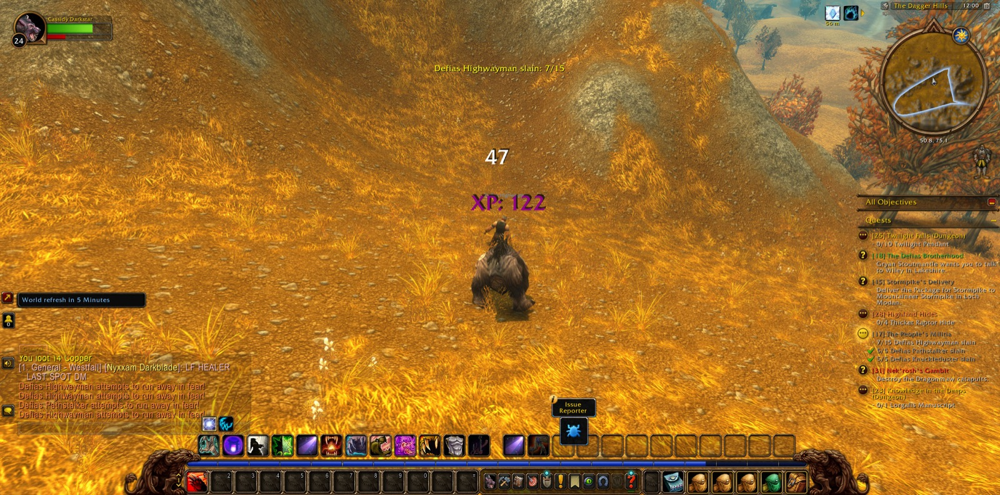
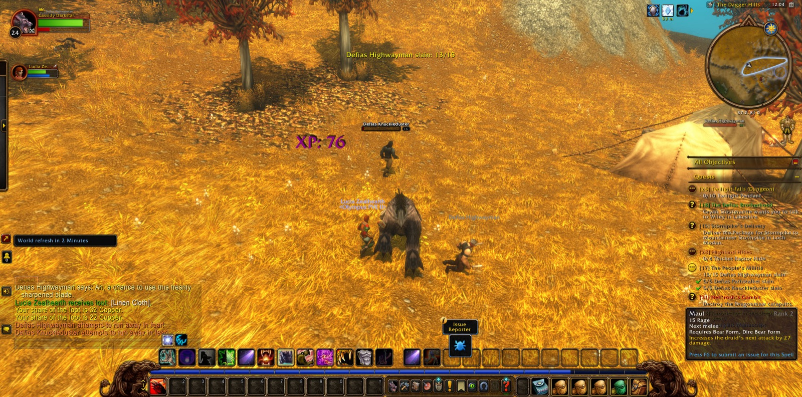

Cassidy Darkstar took up the road again in Westfall, at Demont's Place and among The Dagger Hills, where the Defias Highwaymen kept their watch. He saw "Thunderbrew" through. Soon after, Lucia, a Paladin, joined him, and together they finished the reckoning that "The People's Militia" had asked for: fifteen of the Highwaymen slain. Then they went down into The Deadmines, and Cassidy took a picture at its threshold. Вольда, a Hunter, walked with them only a little way, and Lucia parted from him soon after. The Deadmines did not yield easily, but in time the way opened. Abbigale, a Hunter, came to his side and stayed longest of all his companions on this road. Oldschool, another Hunter, joined them near the end. With them Cassidy overcame the Undead Dynamiters and Excavators, gathered the four Miners' Union Cards, and slew Foreman Thistlenettle, whose badge he carried away.


He climbed back out by the Defias Hideout and Moonbrook, passed Stendel's Pond, and came to Sentinel Tower, where "The People's Militia" was laid to rest. From there he went north by Saldean's Farm, crossed the edge of The Darkened Bank, and passed Forest's Edge and Mirror Lake into Stormwind City by the Valley of Heroes. In Old Town he took up "The Color of Blood". In the Dwarven District he gave over the badge and the cards, closing "Oh Brother..." and "Collecting Memories", and there he came into the strength of his twenty-fifth year of skill and was named a Novice Druid. He marked the moment with a picture.


Elwynn Forest called him next. At the Tower of Azora he finished "Further Concerns" and took up the search for the lost guards. That errand led him to Stone Cairn Lake and to the fate of Rolf, and he carried Rolf's and Malakai's medallions to Guard Thomas at the eastern bridge. He drove off the young forest bears and the prowlers about Ridgepoint Tower to protect the frontier, and he bore Thomas' report back to Goldshire. Then he took the Stormwind Armor Marker to Sara Timberlain at the Eastvale Logging Camp and gathered six red linen bandanas at the Brackwell Pumpkin Patch for her.


Beyond Deepwater Tavern lay Menethil Harbor and the Wetlands. There he took up "Lost in the Thicket Things" and "Fall of Dun Modr", and he went east by Bluegill Marsh and Sundown Marsh to the Angerfang Encampment. Slyra, a Warrior, stood with him there for a short while among the Dragonmaw Raiders and Bonewarders. Together they finished "Nek'rosh's Gambit", and Cassidy took up the charge to defeat Nek'rosh himself. In Mosshide Fen he hunted the gnolls and their mongrels until "Tramping Paws" was done, and he took a great many pictures along the way. From a Leech Stalker he took an unruptured gland for "Alchemical Hazards". He went on past Thelgen Rock and The Green Belt and reached Dun Modr, where "Fall of Dun Modr" ended and "The Dark Iron War" began. He paused at Ironbeard's Tomb long enough for one more picture, and then he went back to Menethil Harbor to hand over the gland.


Westward lay the harbor and the sea, and eastward lay the marsh, with errands still unfinished in both directions.







